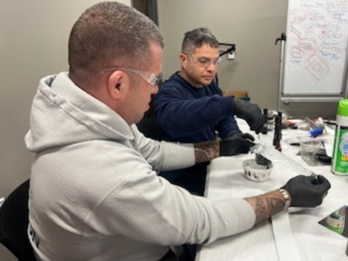
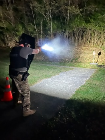

Prepared People.
Modern Tools.
Stronger Response.
Supporting the advanced training, reliable equipment and specialized capabilities that help Jeffersontown Police Department personnel serve safely, effectively and with confidence.
See What Your Support Makes Possible →Readiness Starts Before the Call.
The Foundation helps provide opportunities for advanced training, modern equipment and specialized resources that strengthen how Jeffersontown Police Department personnel prepare, respond and serve the community.
Preparation Builds Confidence.
Strong training gives personnel the opportunity to sharpen skills, strengthen decision-making and prepare for the wide range of situations they may encounter. Foundation support can help expand access to specialized instruction and professional development beyond the basics.
The Right Tools Make a Difference.
Modern tools and reliable equipment help personnel work more efficiently, respond safely and meet changing operational needs. Foundation support can help strengthen everyday resources while giving specialized units access to equipment suited to the work they are asked to do.
Training That Moves With the Mission.
Readiness is built through practice. From lifesaving response and investigative work to driver training and coordinated team operations, preparation helps personnel meet the moment when the community needs them.
 Driver Training
Driver Training
Investigative Skills Team Response
Team Response
Specialized ReadinessHelping JPD Stay Ready for What’s Next.
The Foundation can help JPD invest in important equipment, technology and specialized resources that go beyond what traditional public funding may provide. These investments can improve efficiency, strengthen capabilities and help personnel stay prepared as public safety needs evolve.
Help Equip the People Who Serve Jeffersontown.
Your support can help strengthen training, improve equipment and expand the capabilities personnel rely on to serve the community safely and effectively.
Support Training & Equipment →